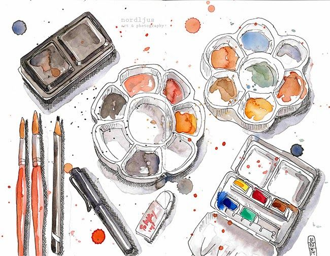

Is watercolor good for beginners? Yes, watercolor is ideal for beginner artists. Despite having some characteristics that can cause newcomers some problems, this medium is accessible to artists of any skill level, its fun to use, and great results can be obtained quickly. You may have heard that watercolor is challenging to master. To some extent, that is true. Watercolor can be a bit… hmmm… unpredictable. The medium of watercolor may seem daunting and tricky at first, but it really isnt. After painting in watercolors for many years, I have always found it a constant source of pleasure. The techniques you need to learn to paint with this beautiful medium are relatively easy to pick up. You just need some background knowledge about watercolors and some practice… (and perhaps a bit of guidance). Watercolor remains one of the most popular art mediums for newbies, and plenty of good reasons exist for this.
Why watercolors are better
